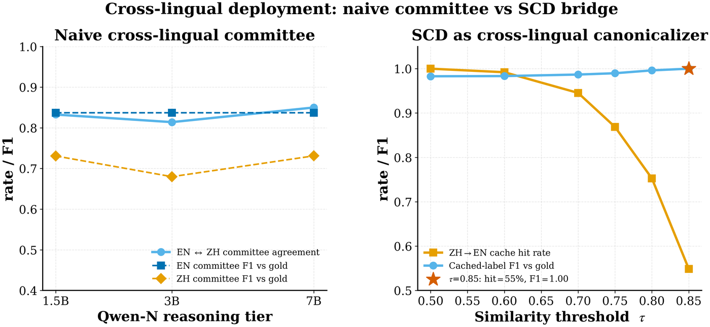
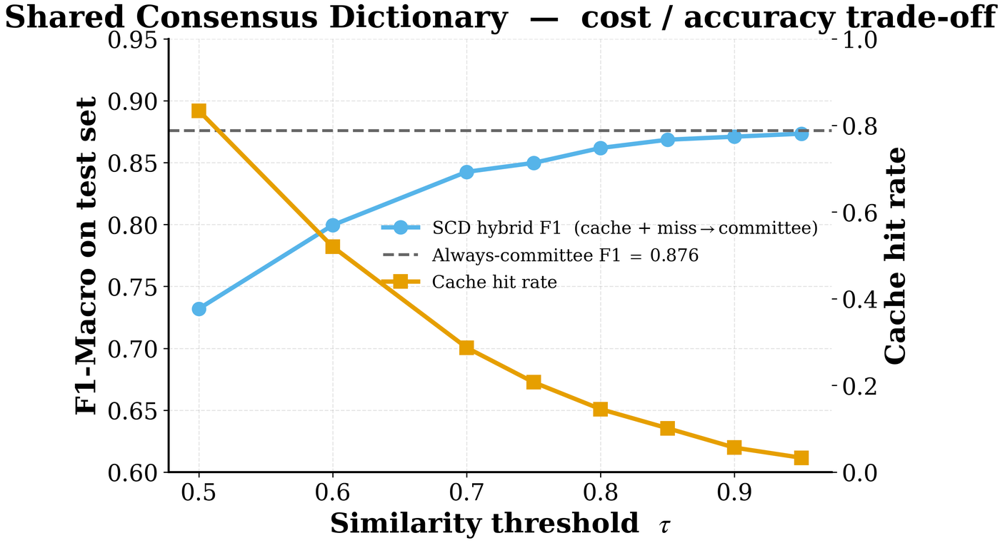

TriAgent → Multilingual semantic cache
A cache that crosses languages
Key your LLM cache on a multilingual sentence embedding instead of a string, and a new market inherits the answers you already computed for the old one: 95% of Chinese queries hit the English cache at F1 0.99.
What the Shared Consensus Dictionary stores
The Shared Consensus Dictionary (SCD) is a semantic cache with two properties that distinguish it from a conventional LLM cache.
First, it caches committee decisions rather than single-model outputs — the adjudicated answer, which is more accurate than any individual member's. Second, its key is a multilingual sentence embedding (paraphrase-multilingual-MiniLM-L12-v2, 384 dimensions), which turns the cache into a cross-lingual canonicaliser.
A query is embedded to φ(x), k-NN searched against cached entries by cosine similarity, and served the cached label when the best match σ* exceeds a threshold τ.
The cross-lingual result
Chinese-translated Financial PhraseBank queries matched against an English-only cache:
| τ | Cross-lingual hit rate | Accuracy vs. gold | F1 vs. gold |
|---|---|---|---|
| 0.50 | 100.0% | 0.987 | 0.983 |
| 0.60 | 99.2% | 0.988 | 0.983 |
| 0.70 | 94.5% | 0.990 | 0.987 |
| 0.75 | 86.9% | 0.992 | 0.990 |
| 0.80 | 75.3% | 0.997 | 0.996 |
| 0.85 | 54.9% | 1.000 | 1.000 |
At τ = 0.70 nearly every Chinese query finds an English entry that means the same thing, and the label it inherits is right 99% of the time. The Chinese committee never runs.

The monolingual trade-off
Within a single language the threshold trades coverage against accuracy in the usual way. On Financial PhraseBank, 3,386 build / 1,452 query split:
| τ | Hit rate | F1 loss vs. always-committee |
|---|---|---|
| 0.95 | 3% | −0.3 pp |
| 0.85 | 10% | −0.8 pp |
| 0.50 | 83% | −14.5 pp |
Scaling the cache from 4,838 to 16,769 sentences preserves the shape of this curve, which suggests the trade-off is a property of the method rather than of the particular corpus.

Against GPTCache
| GPTCache | Shared Consensus Dictionary | |
|---|---|---|
| What is stored | single-model output | committee decision |
| Key | monolingual sentence embedding | multilingual sentence embedding |
| Serves a new language | no — populate per language | yes — inherits from any language already cached |
A caution: the architecture should change with the language
The cache crosses languages cleanly. The model hierarchy does not.
| Language | Specialist | Specialist F1 | Qwen-7B F1 | Winner |
|---|---|---|---|---|
| English | FinBERT | 0.88 | 0.81 | specialist |
| Mandarin | finbert-tone-chinese | 0.72 | 0.80 | LLM |
The ranking inverts. Where no strong domain specialist exists for a language, the LLM is the specialist and the router should escalate from reasoner to encoder rather than the reverse. Optimal committee architecture is language-specific even when the cache is not.
A sharper version of the same point: on FinChinaSentiment (5,738 genuine Chinese sentences), English VADER and English FinBERT both score F1 = 0.06 — essentially random, because they do not process Chinese at all. Cross-lingual transfer is a property of the multilingual embedding, not of the monolingual models sitting behind it.
Why cross-lingual transfer is nearly lossless here
Running the full multi-size sweep on 1,500 translated sentences: Qwen-7B reaches F1 0.80 in Chinese against 0.81 in English, a 1-point drop. Qwen-1.5B actually does slightly better in Chinese (0.72) than English (0.69). The 3B anomaly — where 3B underperforms 1.5B by over-predicting the neutral class — persists in both languages, which suggests it is a property of that checkpoint rather than of the language.